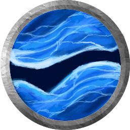

Ocean's Omen
The Ocean's Omen is a legendary weapon carried by the founder of Zenakk. It is told that this weapon is shapeless and it's form is born from the tides of the weapon holder. This weapon carries the entire force of the Ocean and it grows with its wielder. The more in tune the wielder is with the ocean then easier is to canalyze its power. When one becomes one with the waves then the true power of this weapon is unlocked.